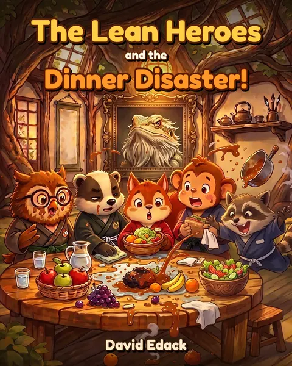

What if children met Lean first?
Most of us met Lean at work, years in, usually when something was already on fire.
Lean Heroes asks a simple question: what if children met it first, at the kitchen table, before anyone told them problems are someone's fault?
What's here so far

- A picture book, The Lean Heroes and the Dinner Disaster, where five woodland friends fix a ruined Friday dinner using DMAIC. Master Taff, a bearded dragon, is their sensei.
- Two free games, one for DMAIC and one for SIPOC, each with a printable certificate.
- Elements of Lean, short lessons for parents and teachers. The idea is simple: you learn a tool best by teaching it to a child.
What surprised me
Children didn’t need the jargon. “Count before you guess” and “fix the process, not the person” landed straight away.
And the grown-ups often learned the most, because explaining DMAIC to a nine-year-old quickly shows which parts you really understand.
Why I’m asking
I’ve spent over 35 years in operations and logistics, and Lean has been part of how I work. But teaching it to children is a different job, and I’d rather have it checked by people who teach and practise it every day than mark my own homework.
The book series and the games are still growing, so now is when a good eye makes the biggest difference.
A small gemba walk
If you have twenty minutes, I’d value your honest view:
- Play one of the games. What would you change?
- Read a lesson. Where does it oversimplify, or get something wrong?
- Which tool would you teach a ten-year-old first, and why?
If it makes sense to do more together after that, let’s talk.
Get in touch
No sales pitch, no mailing list. Just an email: edack.david@gmail.com
EDACK